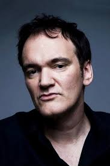
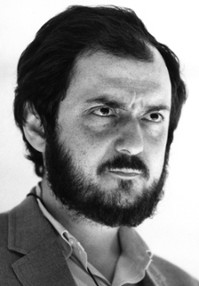

<!DOCTYPE html>
<html lang="pl"></html>
<head>
    <meta http-equiv="Content-type" content="text/html; charset=UTF-8"/>
    <meta name="Author" content="Przewodowski Łukasz" />
    <link rel="stylesheet" href="style.css" />
    <script src="timedate.js" type="text/javascript"></script>
    <script src="darkmode.js" type="text/javascript"></script>
    <title>Filmy Oscarowe</title>
</head>
<body>
    <header>
        <h1>Reżyserowie</h1>
        <button id='theme-switch'>
            <svg xmlns="http://www.w3.org/2000/svg" height="24px" viewBox="0 -960 960 960" width="24px" fill="#5f6368"><path d="M480-120q-150 0-255-105T120-480q0-150 105-255t255-105q14 0 27.5 1t26.5 3q-41 29-65.5 75.5T444-660q0 90 63 153t153 63q55 0 101-24.5t75-65.5q2 13 3 26.5t1 27.5q0 150-105 255T480-120Z"/></svg>
            <svg xmlns="http://www.w3.org/2000/svg" height="24px" viewBox="0 -960 960 960" width="24px" fill="#5f6368"><path d="M480-280q-83 0-141.5-58.5T280-480q0-83 58.5-141.5T480-680q83 0 141.5 58.5T680-480q0 83-58.5 141.5T480-280ZM200-440H40v-80h160v80Zm720 0H760v-80h160v80ZM440-760v-160h80v160h-80Zm0 720v-160h80v160h-80ZM256-650l-101-97 57-59 96 100-52 56Zm492 496-97-101 53-55 101 97-57 59Zm-98-550 97-101 59 57-100 96-56-52ZM154-212l101-97 55 53-97 101-59-57Z"/></svg>
        </button>
        <nav>
            
            <a href="index.html">Strona Główna</a>
            <a href="filmy.html">Filmy</a>
            <a href="aktorzy.html">Aktorzy</a>
            <a href="rezyserowie.html">Reżyserowie</a>
            <a href="kontakt.html">Kontakt</a>
            <div class="time-box">
                <div id="zegarek"></div>
                <div id="data"></div>
            </div>
        </nav>
    </header>
    <div>
        <table>
            <tr>
                <th>Zdjęcie</th>
                <th>Reżyser</th>
                <th>Filmografia</th>
            </tr>
            <tr>
                <td></td>
                <td>Quentin Tarantino</td>
                <td>
                    <p>Pulp Fiction (1994) - Kultowy film z nieliniową fabułą, który stał się jednym z najważniejszych dzieł kina lat 90.</p>
                    <p>Wściekłe psy (1992) - Debiutancki film Tarantino, pełen napięcia i inteligentnych dialogów.</p>
                    <p>Bękarty wojny (2009) - Alternatywna wersja historii II wojny światowej, pełna humoru i intensywnych scen.</p>
                    <p>Kill Bill: Vol. 1 (2003) i Vol. 2 (2004) - Dwuczęściowy film o zemście, łączący różne style filmowe i inspiracje.</p>
                    <p>Django (2012) - Western o wyzwoleniu niewolnika i zemście, z nagrodzoną Oscarem rolą Christopha Waltza.</p>
                    <p>Pewnego razu... w Hollywood (2019) - Nostalgiczne spojrzenie na Hollywood lat 60., z Leonardo DiCaprio i Bradem Pittem w rolach głównych.</p>
                    <p>Nienawistna ósemka (2015) - Kameralny western, którego akcja toczy się głównie w jednym miejscu, pełen napięcia i brutalnych zwrotów akcji.</p>
                </td>
            </tr>
            <tr>
                <td></td>
                <td>Stanley Kubrick</td>
                <td>
                    <p>2001: Odyseja kosmiczna (1968) - Przełomowy film science fiction, znany z wizjonerskiej reżyserii i filozoficznego podejścia do tematu ludzkiej ewolucji.</p>
                    <p>Lśnienie (1980) - Kultowy horror oparty na powieści Stephena Kinga, z genialną rolą Jacka Nicholsona.</p>
                    <p>Mechaniczna pomarańcza (1971) - Kontrowersyjny film opowiadający o przemocy i manipulacji, oparty na powieści Anthony'ego Burgessa.</p>
                    <p>Full Metal Jacket (1987) - Film o wojnie w Wietnamie, który ukazuje brutalną rzeczywistość szkolenia wojskowego i samej wojny.</p>
                    <p>Barry Lyndon (1975) - Piękny wizualnie dramat kostiumowy, opowiadający o losach XVIII-wiecznego awanturnika.</p>
                    <p>Lolita (1962) - Adaptacja kontrowersyjnej powieści Vladimira Nabokova, opowiadająca o niezdrowej obsesji mężczyzny na punkcie młodej dziewczyny.</p>
                </td>
            </tr>
            <tr>
                <td></td>
                <td>Christopher Nolan</td>
                <td>
                    <p>Incepcja (2010) - Thriller science fiction, w którym Leonardo DiCaprio wciela się w rolę złodzieja potrafiącego wkradać się do snów, eksplorując granice podświadomości.</p>
                    <p>Mroczny Rycerz (2008) - Druga część trylogii o Batmanie, uważana za jeden z najlepszych filmów superbohaterskich, z niezapomnianą rolą Heatha Ledgera jako Jokera.</p>
                    <p>Interstellar (2014) - Epicki film science fiction, w którym bohaterowie wyruszają na podróż międzygwiezdną, aby odnaleźć nowy dom dla ludzkości.</p>
                    <p>Batman: Początek (2005) - Pierwszy film z trylogii Batmana, ukazujący genezę Mrocznego Rycerza i jego walkę z przestępczością w Gotham.</p>
                    <p>Mroczny Rycerz Powstaje (2012) - Ostatnia część trylogii, zamykająca historię Batmana w epickim stylu.</p>
                    <p>Tenet (2020) - Skomplikowany thriller science fiction, opowiadający o agentach próbujących zapobiec globalnej katastrofie, z motywem odwracania czasu.</p>
                </td>
            </tr>
        </table>
    </div>
    <div class = "footer-container">
        <footer>
            <p>Przewodowski Łukasz 169354</p>
        </footer>
    </div> 
</body>